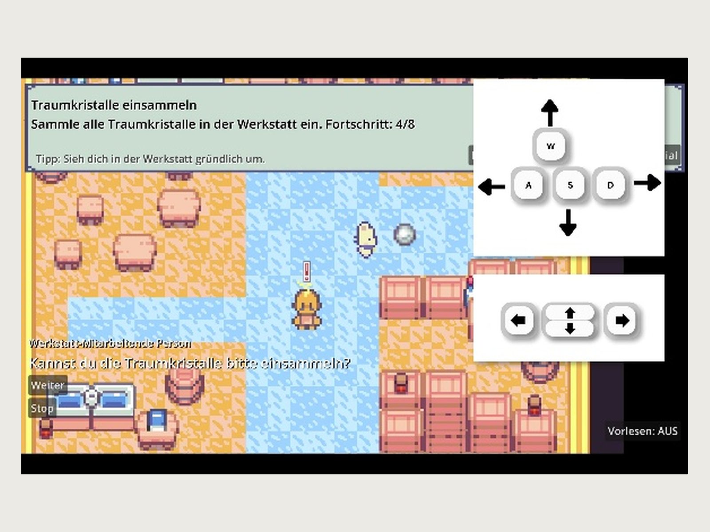
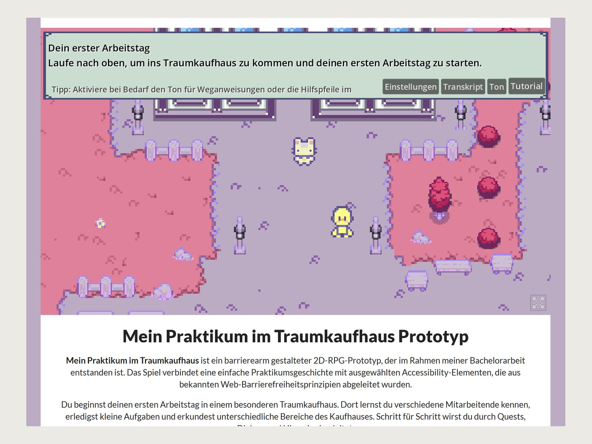

Mein Praktikum im Traumkaufhaus
Bachelorarbeit: Was passiert, wenn man Web-Barrierefreiheitsrichtlinien konsequent auf ein Videospiel überträgt – als spielbarer Prototyp, mit 20 Testpersonen geprüft.
- Jahr
- 2026
- Kontext
- Bachelorarbeit, Kommunikation und Medienmanagement
- Rolle
- Recherche, Konzept, Game Design, UI-Design, Entwicklung, Pixel-Art, Evaluation
- Werkzeuge
- Godot, GDScript, HTML, CSS, Aseprite, Affinity, WCAG

Ausgangslage
Für Websites ist Barrierefreiheit inzwischen weitgehend geregelt: Mit den WCAG gibt es einen ausdifferenzierten Referenzrahmen, dazu Normen, Prüfwerkzeuge und rechtliche Vorgaben. Für Videospiele gilt das so nicht – dort ist Barrierefreiheit weder verbindlich noch einheitlich geregelt.
Videospiele sind aber längst nicht nur Freizeitprodukt. Sie sind Orte der Unterhaltung, des Lernens und der sozialen Zugehörigkeit. Gerade weil sie als Freizeitmedium gelten, fallen Barrieren dort weniger auf als auf einer Behördenseite: Wenn ein Spiel zu unübersichtlich, zu stressig, zu schnell, zu dunkel oder zu schwer verständlich ist, wird es einfach nicht weitergespielt. Aus Perspektive digitaler Teilhabe ist genau das relevant – auch digitale Freizeitorte entscheiden darüber, wer sich selbstverständlich beteiligen kann.
Meine Aufgabe
Meine Bachelorarbeit ging der Frage nach: Inwieweit lassen sich bestehende Web-Barrierefreiheitsrichtlinien auf Videospiele übertragen und in Game-Mechaniken integrieren? Vier Monate, allein, von der Literaturrecherche über einen spielbaren Prototyp bis zu dessen Evaluation.
Vorgehen
Erst die Lücke bestimmen, dann gestalten. Ich habe WCAG und Game-Accessibility-Guidelines gegenübergestellt und geprüft, wo sie sich decken und wo nicht. Die Webprinzipien Wahrnehmbarkeit, Bedienbarkeit, Verständlichkeit und Robustheit tragen auch im Spiel. Sie erfassen aber Regelbindung, Echtzeitreaktion, komplexe Steuerung und dynamische Reizverarbeitung nur teilweise. Daraus habe ich einen Kriterienkatalog entwickelt, der beide Seiten verbindet und jede Anforderung an eine konkrete Konsequenz für den Prototyp knüpft.
Der Prototyp ist um die Zugänglichkeit herum entstanden, nicht andersherum. Hilfsfunktionen sollten nicht nur vorhanden, sondern auch auffindbar sein – deshalb sitzen Einstellungen, Transkript, Ton und Tutorial dauerhaft sichtbar in der oberen Leiste statt in einem Untermenü.
Dialoge schalten manuell weiter, nicht automatisch. Die naheliegende Alternative wäre ein Anzeigetimer gewesen. Der hätte bedeutet, dass langsameres Lesen zum Scheitern führt. Stattdessen bleibt jeder Textkasten stehen, bis weitergeklickt wird, und lässt sich mit „Stop" anhalten. Informationen müssen nicht nur da sein, sondern auch lange genug verfügbar bleiben.
Aus Navigation wird Questanzeige. Im Web entsteht Orientierung durch Navigationsstrukturen, Überschriften und sichtbare Zustände. Im Spiel ist Orientierung räumlich und handlungsbezogen: Man muss nicht nur erkennen, welche Information wichtig ist, sondern auch, wohin man geht und was als Nächstes zu tun ist. Übersetzt habe ich das in eine dauerhaft sichtbare Aufgabenleiste mit Zählstand („Traumkristalle einsammeln – Fortschritt 4/8") und einem Hinweis, wo zu suchen ist. Wer eine Ansage verpasst hat, liest sie oben nach, statt sich erinnern zu müssen.
Die Spielwelt wurde bewusst kleiner. Ursprünglich war sie größer angelegt, um nach einem vollständigen Spiel zu wirken. Im Aufbau zeigte sich, dass eine große Welt die Orientierung erschwert und die kognitive Belastung erhöht. Die Verdichtung war deshalb nicht nur eine Produktionsentscheidung, sondern auch eine Entscheidung für Barrierearmut.
Umsetzung
Gebaut in Godot mit GDScript, Pixel-Art in Aseprite, Grafiken in Affinity, die Präsentationsseite in HTML und CSS. Der Prototyp läuft als Webexport im Browser und ist auf itch.io spielbar.
Technisch am heikelsten war der Webexport selbst: Inhalte innerhalb eines Canvas sind für Screenreader nicht automatisch zugänglich. Eine barrierearme Gestaltung der umgebenden Seite kann das unterstützen, ersetzt aber keine Lösung im Spiel. Deshalb liegen zugängliche Informationen bewusst außerhalb des Canvas, ergänzt um Transkript und Vorlesefunktion.
Ein Teil der Grafiken stammt aus Open-Source-Quellen. Das war eine bewusste Abwägung: In der verfügbaren Zeit wären eigene Assets zulasten der Zugänglichkeitsfunktionen gegangen – und die waren der Kern der Arbeit.
Ergebnis
Evaluiert habe ich den Prototyp mit einem Fragebogen (n = 20) und fünf qualitativen Interviews.
- 100 %fanden Texte und Hinweise verständlich
- 100 %fanden die Rückmeldungen des Spiels nachvollziehbar
- 90 %bewerteten die Einstellungen als hilfreich und nahmen das Spiel als barriereverringernd gestaltet wahr
- 85 %erkannten Elemente wieder, die sie aus barrierearmen Websites und Apps kennen – der wichtigste Befund für die Forschungsfrage
- 70 %– der schwächste Wert – bei der Übersichtlichkeit wichtiger Informationen
Der letzte Wert ist der aufschlussreichste. Die Kritik traf ausgerechnet die Accessibility-Elemente selbst: Textboxen und Overlays nahmen teilweise zu viel Raum ein und verdeckten Inhalte, helle Schrift auf wechselndem Hintergrund war nicht immer lesbar, Buttons in der oberen Leiste überlagerten die Spielfläche. Gut gemeinte Hilfen können also selbst zur Barriere werden, wenn sie visuell zu dominant sind oder sich nicht ausreichend vom Hintergrund abheben.
Aufschlussreich war außerdem eine Rückfrage an Personen, die zu Beginn angegeben hatten, keine unterstützenden Funktionen zu brauchen. Fünf von ihnen sagten danach, dass sie solche Funktionen durchaus hilfreich fänden – sie erwarten sie in Spielen nur nicht. Wer daran gewöhnt ist, dass Spiele nicht auf unterschiedliche Bedürfnisse reagieren, nimmt Barrieren nicht als vermeidbares Gestaltungsproblem wahr, sondern als selbstverständlichen Teil des Spielens. Der Bedarf wird dann gar nicht erst benannt.
Was ich mitgenommen habe
Die Antwort auf meine Forschungsfrage ist ein Ja mit Bedingung: Webrichtlinien sind ein tragfähiger Ausgangspunkt, aber eine unveränderte Übernahme reicht nicht. Ihre Stärke entfalten sie erst, wenn sie mediengerecht übersetzt werden – in Orientierung, wiederholbares Feedback, Tutorialführung und vor allem in Erwartbarkeit.
Für meine Arbeit an Interfaces ist davon eines geblieben: Fast jede Entscheidung für Barrierearmut hat den Prototyp auch für alle anderen besser gemacht. Die nachlesbare Aufgabe hilft nicht nur Menschen mit Gedächtnisbeeinträchtigung, sondern ebenso allen, die zwischendurch aufstehen. Gutes Design ist barrierefrei – das war vorher eine Überzeugung und ist seitdem eine Arbeitsweise.
Wie es weitergeht
Aus der Evaluation ist ein Prototyp 2.0 abgeleitet: wiederholbare, situationsbezogene Tutorialhinweise statt einer einmaligen Einführung, ruhigere Overlays, eine deutlichere Zuordnung von Dialogen zu Figuren und bessere Kontraste. Längerfristig soll aus dem Prototyp ein vollständiges Spiel werden – dann mit eigenen Grafiken.

